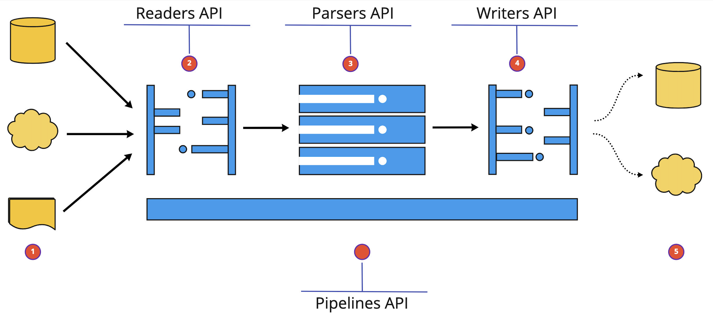

Overview#
At its core, ocrpy is a Python library that can read Pdf and Image documents from Any cloud storage service or a local file system, and then perform a set of operations on these documents like identification of document type, parsing the layout of the document, and extracting text &/or tables from the document and then writing the results to cloud storage, local file system or a database.
{kind=link}
Ocrpy Library Overview#
Ocrpy provides Five core APIs for performing the above mentioned operations. These APIs are:
Readers - Reads the data from cloud storage or local file system and returns a document object.
Parsers - Parses the document layout, extracts text and/or tables from the document & identify the document type.
Classifiers - Classify documents into various types like Invoice, Receipt, etc. and also identify the various layout components within those documents.
Writers - Writes the results to cloud storage, local file system or a database.
5. Pipelines - A High level abstraction that combines readers, parsers and writers to perform the above mentioned operations on a collection of documents in a single call.
Readers#
Readers lets you read data from multiple cloud storage or local file system and return a standar document object. We currently support the following readers:
Reader |
Description |
Supported File Formats |
Storage Type |
|---|---|---|---|
S3Reader |
Reads data from Amazon S3 storage |
Pdf, JPG and PNG |
Aws S3 |
GcsReader |
Reads data from Google Cloud Storage |
Pdf, JPG and PNG |
Google Cloud Storage |
AzureBlobReader |
Reads data from Azure Blob Storage |
Pdf, JPG and PNG |
Azure Blob Storage |
LocalFileReader |
Reads data from local file system |
Pdf, JPG and PNG |
Local File System |
Parsers#
Parsers extracts text and/or tables from the Pdfs & Images and return them in a standardised format. We currently support the following parsers:
Parser |
Description |
Extracts |
Implementation |
|---|---|---|---|
AwsTextOcr |
Extracts text from Pdfs & Images using Amazon Textract OCR service |
Text |
Supported |
GcpTextOcr |
Extracts text from Pdfs & Images using Google Cloud Vision OCR service |
Text |
Supported |
AwsTableOcr |
Extracts tables from Pdfs & Images using Amazon Textract OCR service |
Table |
Supported |
TesseractTextOcr |
Extracts text from Pdfs & Images using Tesseract OCR library. |
Text |
Supported |
AzureTextOcr |
Extracts text from Pdfs & Images using Azure Textract OCR service |
Text |
WIP |
AzureTableOcr |
Extracts tables from Pdfs & Images using Azure Textract OCR service |
Table |
WIP |
GcpTableOcr |
Extracts tables from Pdfs & Images using Google Cloud Vision OCR service |
Table |
WIP |
Classifiers#
Classifiers identify the type of the document & additionaly identify different layout components within a document/page. They integrate with Huggingface’s transformers library to perform the above mentioned operations. We currently support the following classifiers:
Classifier |
Description |
Backbone Model |
|---|---|---|
DocumentClassifier |
Classifies a given document into 16 different categories (ex: invoice, research_paper …) |
microsoft/dit-base-finetuned-rvlcdip |
LayoutClassifier |
Detects and classifies the layout of a given document (ex: header, footer, table, image …) |
PubLayNet/ppyolov2_r50vd_dcn_365e |
Writers#
Writers consume the output from parsers & classifiers and write the results to cloud storage, local file system or a database. We currently support the following writers:
Writer |
Description |
Supported File Formats |
Storage Type |
|---|---|---|---|
S3Writer |
Writes data to Amazon S3 storage |
Json |
Aws S3 |
GcsWriter |
Writes data to Google Cloud Storage |
Json |
Google Cloud Storage |
AzureBlobWriter |
Writes data to Azure Blob Storage |
Json |
Azure Blob Storage |
LocalFileReader |
Writes data to local file system |
Json |
Local File System |
Pipelines#
Pipelines combine readers, parsers, classifiers and writers and work on a collection of documents in a single call. We currently support the following default pipelines:
Pipeline |
Description |
|---|---|
TextOcrPipeline |
TextOCRPipeline provides a high level interface to run ocr on PDFs, JPGs, and PNGs in either local or cloud storage(AWS S3 or Google Cloud Storage) with a configurable parser backend. |
TextOcrIndexPipeline |
TextOcrIndexPipeline provides a high level interface to run ocr on PDFs, JPGs, and PNGs in either local or cloud storage(AWS S3 or Google Cloud Storage) with a configurable parser backend and then index the results to a database backend of your choice. |